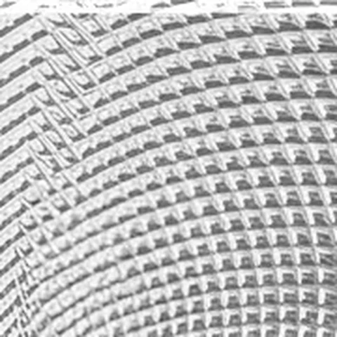
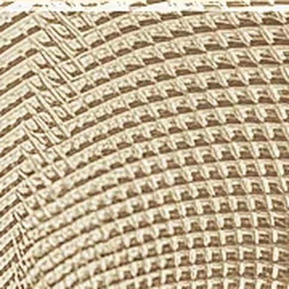
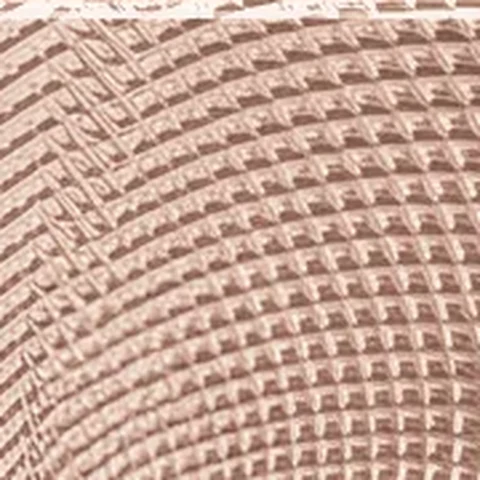
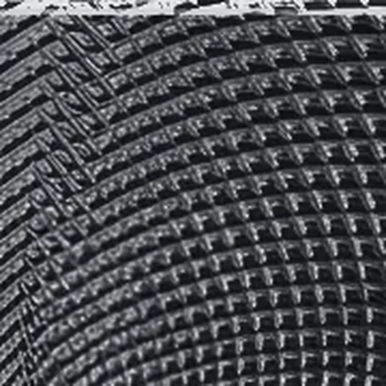
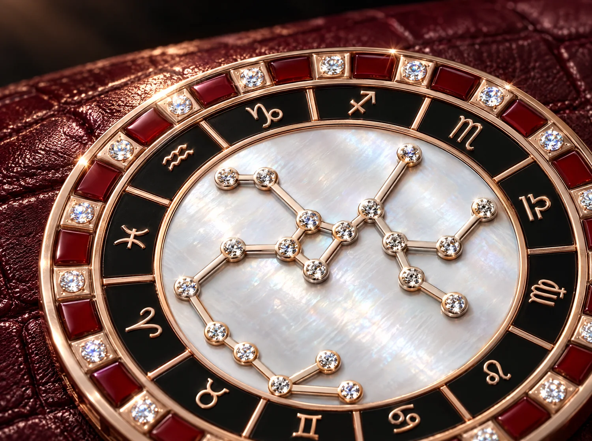
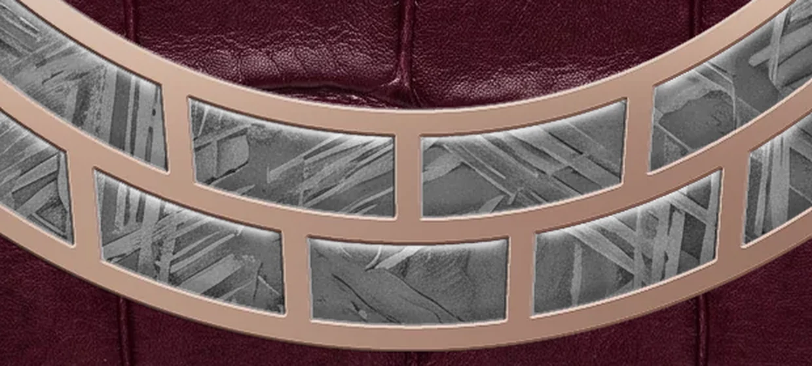
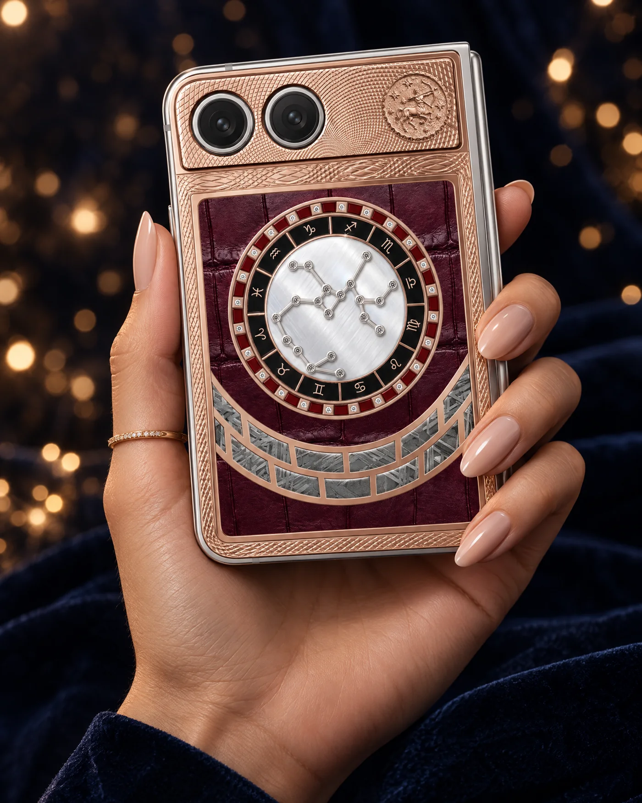
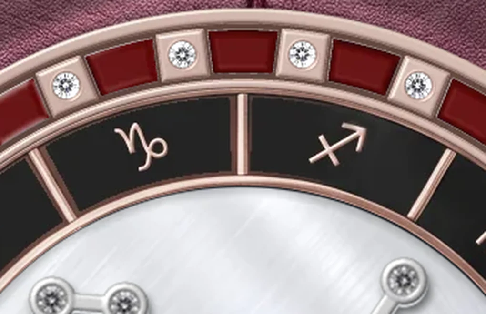
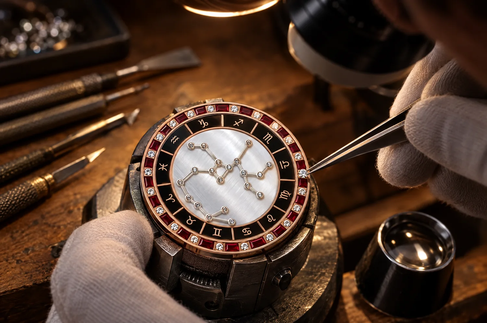
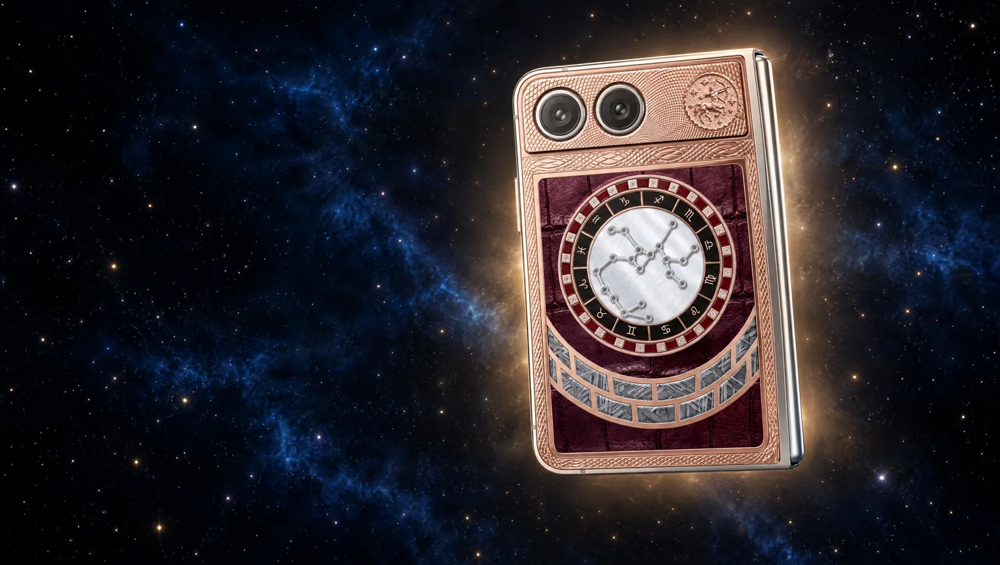

Четыре металла
Серебро с ручным гильошем. Тёплое жёлтое золото. Розовое золото, раскрывающееся при дневном свете. Титан с чёрным PVD-покрытием — прочный, лёгкий, графитовый.
Ваш знак. Ваши материалы. Единственный экземпляр.
В момент вашего рождения звёзды сложились в рисунок, который больше не повторится. Zodiac Duo переносит его на металл: созвездие вашего знака, выложенное бриллиантами, символ знака на медальоне, круг из двенадцати знаков.
Вы сами выбираете каждый материал. Поэтому двух одинаковых Zodiac Duo не существует.

Зодиакальный круг — сердце Zodiac Duo. Двенадцать знаков выгравированы на кольце, по внешней окружности — 24 камня и 24 ячейки ювелирной эмали. В центре — созвездие вашего знака: каждая звезда отмечена бриллиантом.
На медальоне — рельефный символ знака: полированные линии на чеканном фоне в тройном ободе. Двенадцать знаков, четыре металла.
Больше 9 миллионов сочетаний для каждого знака — и бесконечно больше с собственным оттенком эмали.
Каждый материал Zodiac Duo несёт свою историю — и ни один срез не похож на другой.




Серебро с ручным гильошем. Тёплое жёлтое золото. Розовое золото, раскрывающееся при дневном свете. Титан с чёрным PVD-покрытием — прочный, лёгкий, графитовый.

Пластины метеорита в декоративной панели. Рисунок кристаллов формировался миллионы лет, и каждая пластина уникальна по узору.



Чешуя крокодила с неповторимым рисунком — четыре оттенка от Burgundy до Black. Мягкая зернистая кожа телёнка — пять оттенков от Navy до Sky Blue.

Восемь оттенков эмали от Сапфира до Слоновой кости — или ваш собственный. Белые и чёрные бриллианты, рубины. В титане с чёрным покрытием камни не закрепляются: мы предлагаем только то, что можно исполнить безупречно.
Начните со знака — дальше каждое решение за вами. Готовую сборку можно отправить менеджеру, сохранить ссылкой или вернуться к ней по коду.

Zodiac Duo создаётся в ювелирных мастерских Caviar вручную. Технологии здесь служат мастеру, а не заменяют его.
Вы собираете Zodiac Duo сами, поэтому каждый экземпляр существует в единственном числе. Код сборки становится паспортом изделия: по нему ваш Zodiac Duo узнают в любом бутике Caviar.

Ваш знак уже выбрал вас. Остальное — за вами.
Собрать свой Zodiac DuoВ бутиках Caviar и на caviar-phone.ru